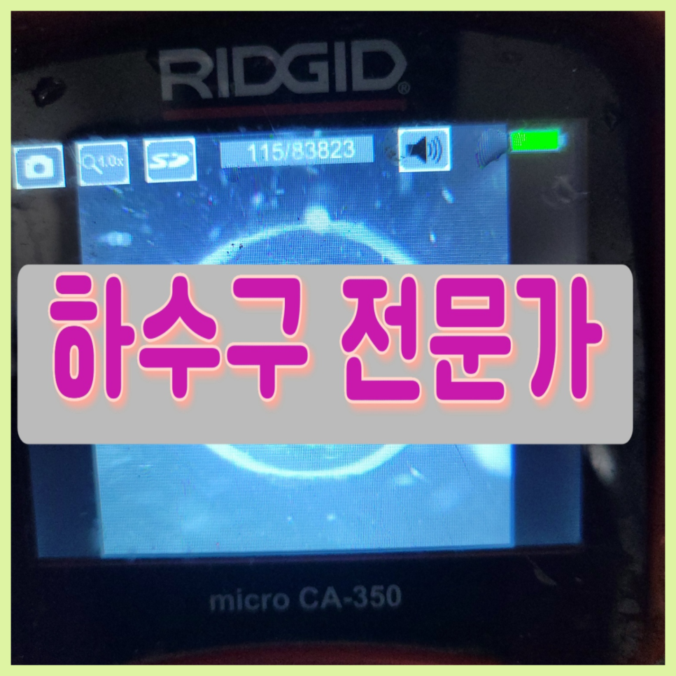
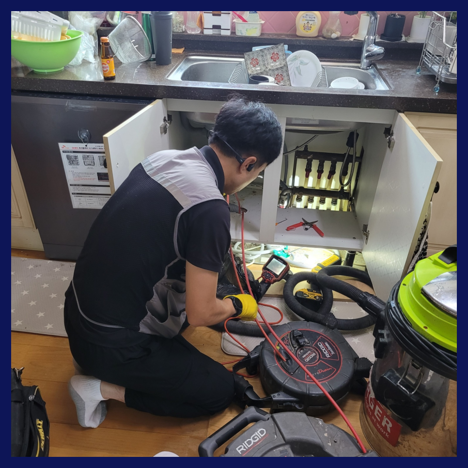
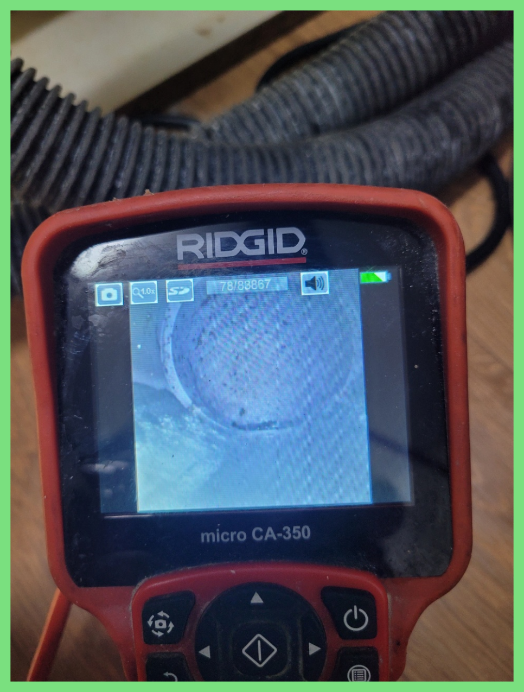
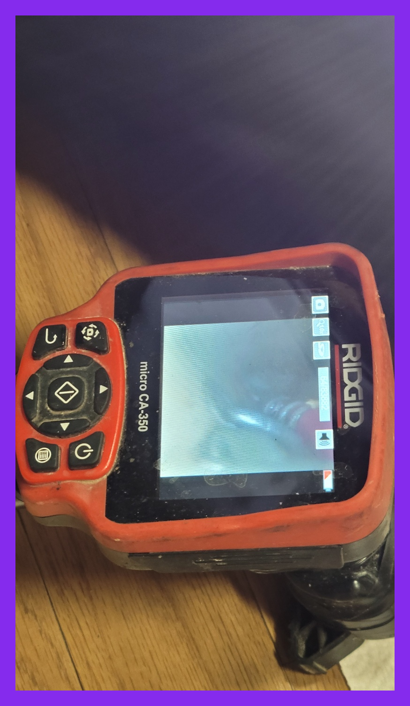
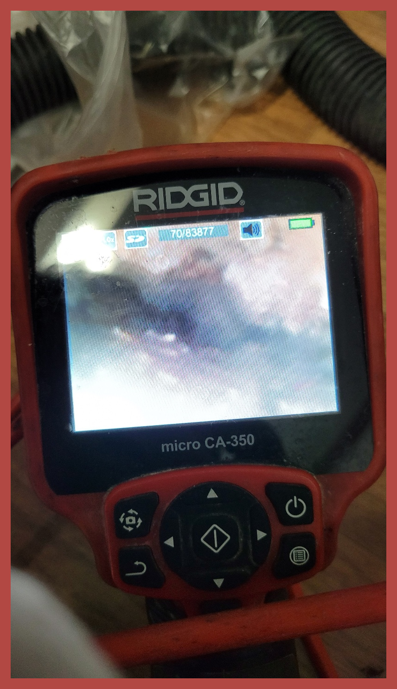
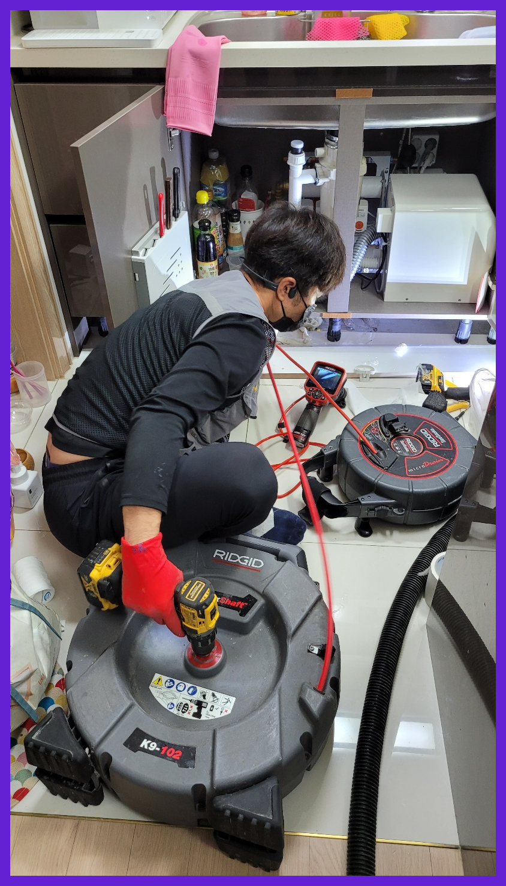
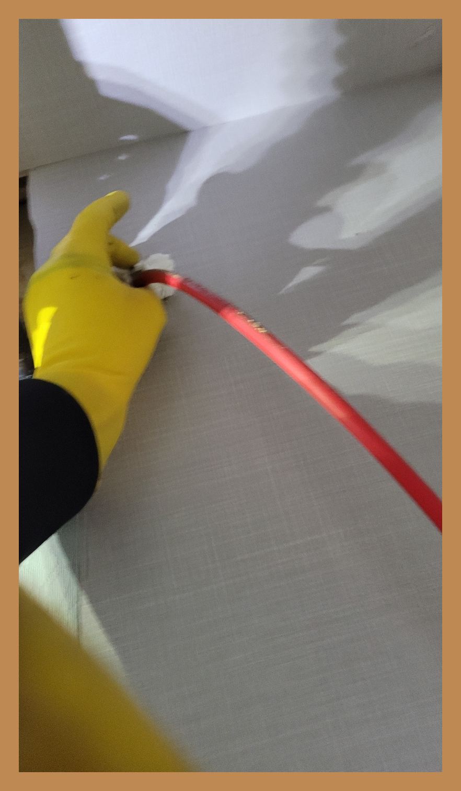

🏠 의왕시 내손동 싱크대하수구막힘뚫음 월암동 배수관설비
용인 싱크대막힘 전문 시공 후기

📋 작업 개요
- 위치: 용인
- 서비스 유형: 싱크대막힘, 변기막힘, 하수구막힘, 배관막힘, 누수수리, 역류해결, 뚫는업체, 배관청소, 고압세척
- 작업 일시: 2023. 9. 15. 19:33
- 업체명: 하수구수사대 (010-5615-2118)
🔍 문제 상황
우리는 가정이나 직장에서 의식하지 못하고 다양한 설비시설 특히 퇴수구시설을 접하고 살아갑니다. 싱크대,변기,세면대 등 우리 삶 속에서 깨끗하고 간편하게 이용하고고 있는 필수 시설입니다.
저희는 다른 곳에서 실패한 현장도 한번에 해결한다는 것이 입수문이 퍼지기 시작하면서 연락주시는 분들이 늘어나고 있습니다.
의왕시 내손동 싱크대하수구막힘뚫음 월암동 배수관설비
만약에 작업을 했는데 하수완벽하게 통수가 안되었을 경우 생활하다보면 또 똑같은 현상이 발생하여 스트레스를 받게 되고 그때서야 추가작업을 의뢰해도 거절하는 곳이 많기 때문에 한번 할때 제대로된 업체에 의뢰하여 확실하게 하는것이 좋아요.
하수전문가에게 도움을 받으려 해도 얼마가 들지 모르기 때문에 고민이 되는 게 당연하시겠지만 시간이 흘러갈수록 비용도 늘어나기 때문에 증상이 발견되었을 때 당장 고칠 생각이 없더라도 얼마나 심각한 것인지 견적 정도는 받아보시는 것을 추천드립니다.

🔎 원인 분석
💡 전문가 진단: 의왕시 내손동 싱크대하수구막힘뚫음 월암동 배수관설비
평상시 문제없이 잘 사용하다가 별다른 증상 없이 배출이 안되고배수구 역류까지 된다면 아마도 이는 갑자기 발생한 일이 아닙니다. 오랜 시간 각종 이물질들이 누적되어 이제서 발생했을 뿐이란 이야기입니다.
고압세척 외에도 비싼 값의 기계는 어정쩡한 곳은 준비가 불가능하여 스케일이 있는 배수구작업을 해야 한다면 무조건 찾아보셔야 합니다. 그렇다고는 하지만 이 모든 것을 갖췄다고 성공하는 것은 아닙니다.
전문업체가 아니라면 대부분 스프링 장비만 들고 방문하여 퇴수구막힘 배관에 작은 구멍만 내고 울을 틀어 내려가니 비용만 받고 갈 텐데요 전문업체는 말로 뚫렸다고 하지않습니다. 막힌 원인부터 내시경으로 찾아내고 전문장비로 완벽하게 뚫어내는 과정을 내시경을 보여드립니다.
전체적인 문제점을 확인한 다음배출구 청소해야 한다는 사실을 알 수 있었습니다.배관은 오래된 건물의 경우 특히 더 손상될 위험이 있으며 내부에 오염도가 심각하기 때문에 신중한 작업이 필요합니다.
주로 고가의 하수장비들을 종류별로 가지고 있는 업체가 많지 않습니다. 그에 따라 상황에 맞춰 유연하게 대처할 수 있는 장비들을 활용하여 해결할 수 있는 방안을 마련해드리고 있습니다.

🔧 작업 과정
배수구막힘 이럴 때 주로 사용하는 것이 바로 플렉스 샤프트입니다. 이 방식은 이물질을 흡입하는 게 아닌 장비 끝에 달린 체인 노즐을 사용해 분쇄해 제거하는 것이죠.
저희업체가 말해드렸던 전문장비들은 하수도내부를 확인가능한 퇴수구카메라뿐만아니라 깊은데있는 침전물들을 고압의강도로 흡입하는 전문장비가있고 기계의헤드에 붙어있는 부속품과 빠르게도는게 강점으로 문제해결이가능한 첨단기계도 갖춰져있습니다
하수막힘 처리하지못하는것에관해선 견적가를요구하는일은 있을수가없어요.내방을하기만해도 금액을요구할때 답답해하고계시는 고객님들만기분이 나빠지시는데요.
배출구막힘 건축물바깥에 배출되지않고 집안쪽에 누수가발생되기에 장판을상하게하면서 아랫세대쪽에도 문제가발생됩니다,다같이이용하는 공동하수관이면 같은건물사람들이 사용하지못하기에 모든부분에서 손해가발생돼요.
현장에 방문해 보니 일단 남자화장실은 이용불가가 되어있는 상태였고, 들어가 보니 바닥에 물이 살짝 차 있는 상태였습니다.배수구막힘이 발생한거죠.
일 년에 한두 번으로 귀찮은 과정 없이 더욱 나은 결과로 위생적이게 관리할 수 있어 고객님들이 좋아하시는하수 배관 케어 서비스를 정기적으로 이용해 보세요. 막힌 곳 뚫어주는 곳 뿐만이 아닌 정기 청소를 통해 나의 주거공간을 더욱 쾌적하게 만들어보세요.
그런데 마지막 구간에 이르러서 어찌 된 일인지 장비가 힘을 발휘하지 못하는 느낌이 들었습니다. 지금까지 빠르게 이물질을 제거하던 고압세척기인데 무슨 일이 생긴 걸까. 이런 경우 무리해서 압력을 계속 주는 것은 현명하지 못합니다.
>


✅ 작업 완료
계신 곳만 대참사가 일어나고 진전은 없으니 난잡해지기만 합니다. 저희 팀의 경우 10년 넘은 실력자들로만 뭉쳤기에 초보자의 방문은 절대 없습니다.
내가 하지 못하는 일이라고 한다면 전문가를 불러서 처리하시기 바랍니다. 그게 정답임을 잊지 마시기 바라며 지금 막혀서 당황하셨다면 저희가 바로 달려가도록 하겠습니다.
#하수구막힘 #하수구뚫음 #하수구역류 #씽크대막힘 #싱크대역류 #오수관막힘 #하수구청소 #욕실하수구막힘 #변기막힘 #하수구뚫는비 #싱크대수리 #화장실막힘




⚠️ 베란다 누수 및 방수 관리 방법
- ✅ 비가 많이 올 때 창틀 주변이나 아래층 천장에 얼룩이 생기는지 정기적으로 확인해 보세요.
- ✅ 우수관 주변 실리콘 마감이 들뜨거나 깨진 틈새가 있는지 손상 여부를 수시로 체크하세요.
- ✅ 베란다 바닥 타일의 줄눈(메지)이 소실되면 그 틈으로 물이 침투하여 누수가 유발됩니다.
- ✅ 누수 의심 증상 발견 시 방치하면 아래층 손실이 커지므로 즉시 전문가의 진단을 받으십시오.
💡 핵심 정리
- 확실한 장비 작업(내시경 점검 및 샤프트 스케일링)으로 원인을 뿌리 뽑습니다.
- 작업 후 1년 이내에 동일한 부위 재발 시 100% 무상 A/S 서비스를 보장합니다.
- 서울 · 경기 · 인천 전 지역에 24시간 언제든 긴급 출동할 수 있도록 항시 대기 중입니다.
❓ 자주 묻는 질문 (FAQ)
🚨 용인 싱크대막힘 문제로 고민이신가요?
정확한 원인 진단과 확실한 시공으로 재발 없는 해결을 약속드립니다.
24시간 긴급 출동 | 서울 · 경기 · 인천 전지역 | 1년 내 재발 시 무상 A/S